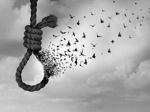
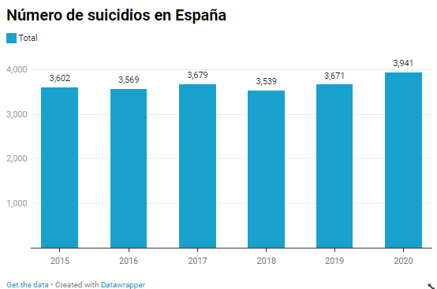
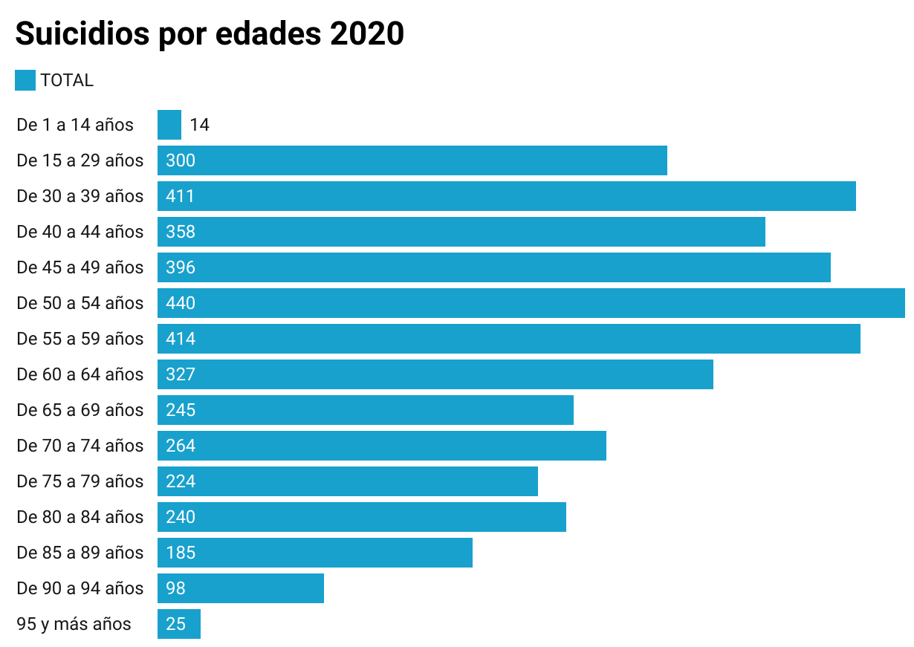

Estamos mal y España no lo quiere reconocer. Cada año son más los casos de suicidio en nuestro país y cada vez son más las personas con problemas mentales que tienen miedo a enfrentarse a un psicólogo por el qué dirán. Otras, se atreven a poner su cabeza en manos de un profesional, pero su economía no se lo permite. Mientras, el suicidio sigue siendo un tema tabú en nuestra sociedad.
¿Alguien se ha parado a pensar cuántas personas se han suicidado en España en 2020? Según datos del INE, nada más y nada menos que 3.941 personas, 11 al día, una cada dos horas y 18 minutos. Nos convertimos así en el quinto país de la Unión Europea con mayor número de defunciones por suicidio y autolesiones por debajo de Alemania, Francia, Polonia, e Italia y se convierte esta en la primera causa de muerte no natural de nuestro país. Cabe destacar, que aunque estos países tienen un número más elevado de suicidios desde el 2011 han ido reduciendo su número de forma considerable, sin embargo, en España se ha mantenido o ha subido. En 2020 murieron 493.776 personas en España y un 0,80% de esas muertes tuvieron como causa el suicidio, pero esto no es una excepción, desde hace cinco años el número de suicidios no ha dejado de subir. Con relación a 2019, en 2020, hubo un 7,4% más suicidios que se reflejaron en 270 muertes más en un solo año. ¿Dónde están las medidas necesarias para solucionar esta situación? ¿Por qué se esconde este tema en casa, en los colegios, en los institutos, en los medios, en el propio Gobierno, entre la ociedad? Los datos gritan una solución urgente.
Expertos en psicología clínica culpan a la pandemia del aumento de suicidios que se ha producido en nuestro país, pero también reclaman un plan de prevención nacional pendiente desde hace varios años. “Durante el confinamiento se redujeron los suicidios porque había menos oportunidades al estar en casa con más personas, pero en cuanto empezó la desescalada y la gente recuperó un poco la normalidad, muchas personas vieron que su vida estaba desbordada por la miseria económica y el número de autolesiones empezó a aumentar”, explican desde ANPIR. Por eso, como recoge en su informe el Ministerio de Sanidad, abril de 2020 fue el mes con un menor número de suicidios y en agosto casi se duplicaron. Las encuestas del CIS también reflejan como la pandemia ha afectado a la salud mental, pues según sus datos recogidos un 6,4% de los ciudadanos han tenido que acudir a un profesional en salud mental desde que empezó la pandemia. De entre toda la gente que ha tenido que solicitar ayuda a profesionales, un 43,7% ha sido debido a episodios de ansiedad y un 35,5% por depresión.
El Observatorio del Medicamento de la Federación Empresarial de Farmacéuticos Españoles (FEFE) ha alertado también del aumento de consumo de psicofármacos y tranquilizantes desde que ha empezado la pandemia. Aunque en su informe también destaca que desde el 2019 ya se ha visto un incremento en el consumo de antipsicóticos y antidepresivos.
Enlace a datawrapperLas cifras de Alemania y Francia, impactan aún más, según datos de Eurostat, el primer país, año tras año, supera los 9.000 casos anuales de suicidios y el segundo los 8.000 casos anuales. Vemos entonces que el problema no sólo es en España, por lo que organizaciones como la OMS deben meter mano en este asunto antes de que sea demasiado tarde. Por poner un ejemplo, en 2017 (último año en el que todos los países de la UE tienen datos actualizados) se contabilizaron un total de 52.784 suicidios en los países de la Unión Europea. Tedros Adhanom Ghebreyesus, Director General de la Organización Mundial de la Salud ya se ha pronunciado al respecto: “Es sumamente preocupante que, a pesar de la evidente y creciente necesidad de servicios de salud mental, la cual se ha agudizado aún más durante la pandemia del COVID-19, las buenas intenciones no se vean acompañadas de inversiones”. Algo que llama mucho la atención a la hora de analizar estos datos es la enorme diferencia que existe entre el porcentaje de hombres y mujeres que se suicidan cada año en los países de la UE. En todos los casos el número de hombres siempre supera el 68% mientras que el número de mujeres rara vez llega al 30%.
Con respecto a las comunidades autónomas Andalucía encabeza, con diferencia, el ránking de suicidios de España con 793 casos sobre el total (3.914), lo que supone un 20% de los casos. Le siguen Cataluña (556 casos), Valencia (440), Madrid (373) y Galicia (305). El 10 de septiembre de este año, la Confederación Salud Mental España, reivindicó, a través de una nota de prensa con motivo del Día Mundial de la Prevención del Suicidio, lo necesario que es elaborar con total urgencia un plan de prevención: “Es prioritario ponerse a trabajar en un plan que abarque desde la formación a profesionales de la salud, hasta la elaboración de campañas de sensibilización social y visibilización del problema para que deje de ser un tabú, pasando necesariamente por la promoción de una educación emocional, ya desde la escuela infantil […] desde SALUD MENTAL ESPAÑA defendemos y urgimos la elaboración de una estrategia nacional, a largo plazo, que fomente una sociedad más humana, más empática, menos competitiva y materialista, basada en los cuidados y en la educación emocional”. Datos de la OMS reflejan que en 2020 solo el 52% de sus 194 Estados Miembros cumplieron la meta relativa a los programas de promoción y prevención de la salud mental, porcentaje que es muy inferior a la meta del 80%. Preocupa también el porcentaje de los presupuestos públicos de salud que destinan los Estados Miembros a la salud mental, ya que apenas ha variado en los últimos años y sigue rondando el 2%. La inversión que España dedica a la salud mental no llega al 4% y en la red pública tan solo hay 11 psiquiatras por cada 100.000 habitantes, por eso, como comentábamos al inicio, muchas personas, aunque hayan decidido dar el paso y acudir a un profesional no se lo pueden permitir económicamente. El Gobierno actual ha mencionado en numerosas ocasiones lo importante que es la salud mental y ha prometido ese plan de prevención y una actualización de la campaña de salud mental. Sin embargo, como se ha visto anteriormente asociaciones, federaciones y profesionales continúan reclamándola cuando está a punto de finalizar este año.
¿Serán los datos de suicidio del 2021 peores?
Pronto tendremos la respuesta